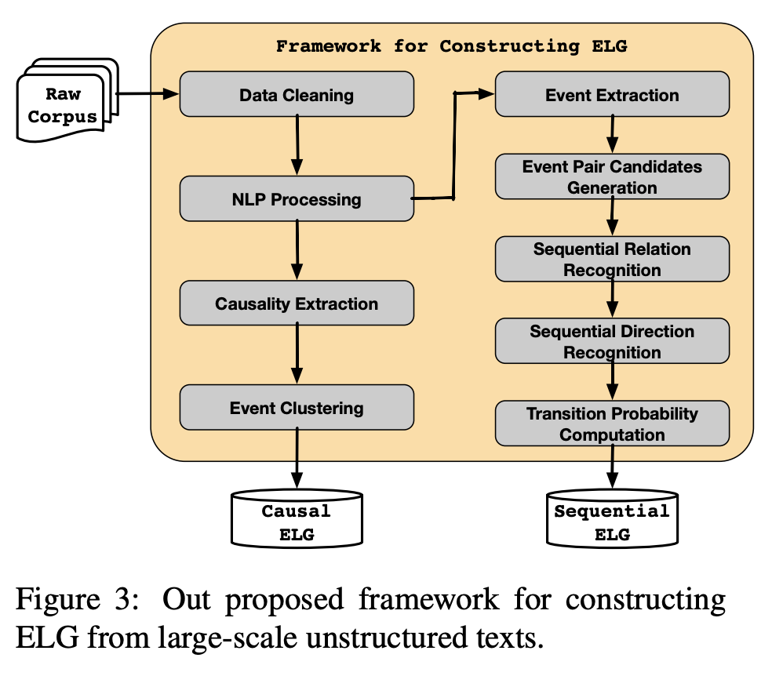

ELG: Event Logic Graph
引言
Event Logic Graph (ELG), which can reveal evolutionary patterns and development logics of real world events.
Specifically, ELG is a directed cyclic graph, whose nodes are events, and edges stand for the sequential, causal,conditional or hypernym-hyponym (“is-a”) relations between events.
事件之间的关系：顺承、因果、条件、上下位
This event sequence is a common pattern for the scenario of having lunch in a restaurant.
Such patterns can reveal the basic rules of event evolutions and human behaviors.
事理图谱中的事件是
常识性知识，比如进饭店吃饭的一般步骤：吃饭->付钱->离开，这种模式反应了事件的演化以及人类的行为。
In this paper, we further propose to organize the universal event evolutionary principles and patterns into a knowledge base based on the extracted temporal and causal event pairs.
事理图谱在于寻找事件演化的一般模式与准则，重点关注
因果、顺承关系
ELG
定义
ELG is a directed cyclic graph, whose nodes are events, and edges stand for the sequential, causal, conditional or hypernym-hyponym relations between events. Essentially, ELG is an event logic knowledge base, which reveals evolutionary patterns and development logics of real world events.
事理图谱是一个有向有环图，其中节点为事件，边代表事件之间的
顺承、因果、条件、上下位关系。它是一个事件逻辑知识库，揭示了现实世界事件的进化模式和发展逻辑。
常识性知识是其中的核心。也就是某一个事件与其他的事件在现实世界中经常发生，比如Plan a weeding后经常会Buy House
In ELG, events are represented as abstract, generalized and semantic complete event tuples E = (S, P, O), where P is the action, S is the actor and O is the object on which the action is performed.
事理图谱中的事件是一个抽象泛化的事件，其表现形式为
主谓宾三元组。
Abstract and generalized means that we do not concern about the exact participants, location and time of an event.
事理图谱中的事件并不关心具体的
参与者、地点、事件。
The conditional relation is a logical relation in which the illocutionary act employing one of a pair of propositions is expressed or implied to be true or in force if the other proposition is true.
条件关系是一种逻辑关系，表示一个命题为真，那么另一个命题也是正确的
The sequential and causal relations in ELG are probabilistic.
事件之间的顺承因果都是都是有一定的
概率性
ELG构建流程

Event Generalize
Given large amount of event pairs extracted in previous steps, we need to connect event pairs to form a graph structure. Intuitively, as shown in Figure 5 (a), if we can find the same event in two event pairs, it is easy to form the graph structure. However, as the extracted events are discretely represented by bag-of-words, we can hardly find two identical events.
Hence, as shown in Figure 5 (b), we propose to find the semantically similar events (A and A’) and connect them. To this end, we propose learning distributed representations for each event, and utilize the cosine similarity to measure the semantic similarity between two event vectors. We use the framework of neural tensor networks to learn event embeddings, as described in our previous work (Ding et al., 2015).
语义相似的事件进行一个整合